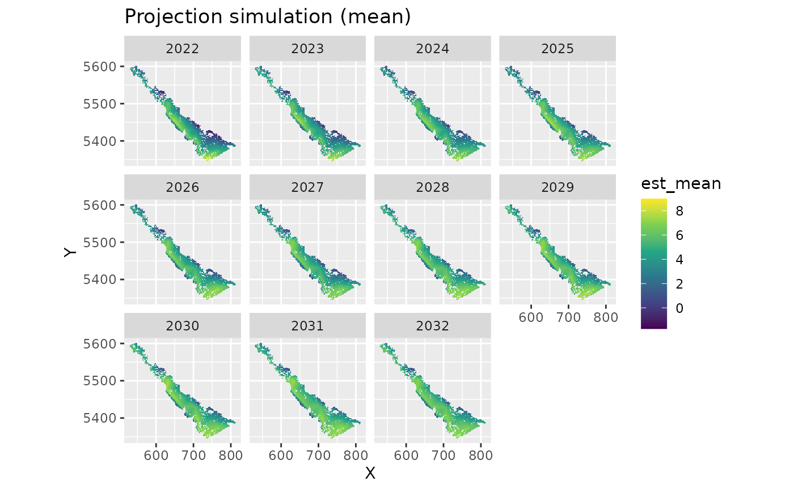
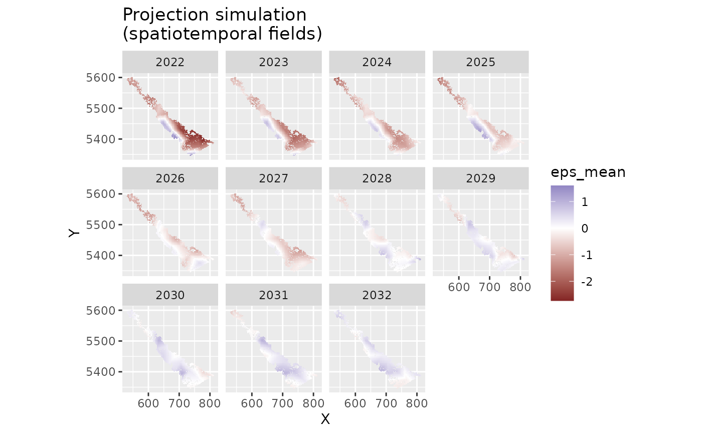
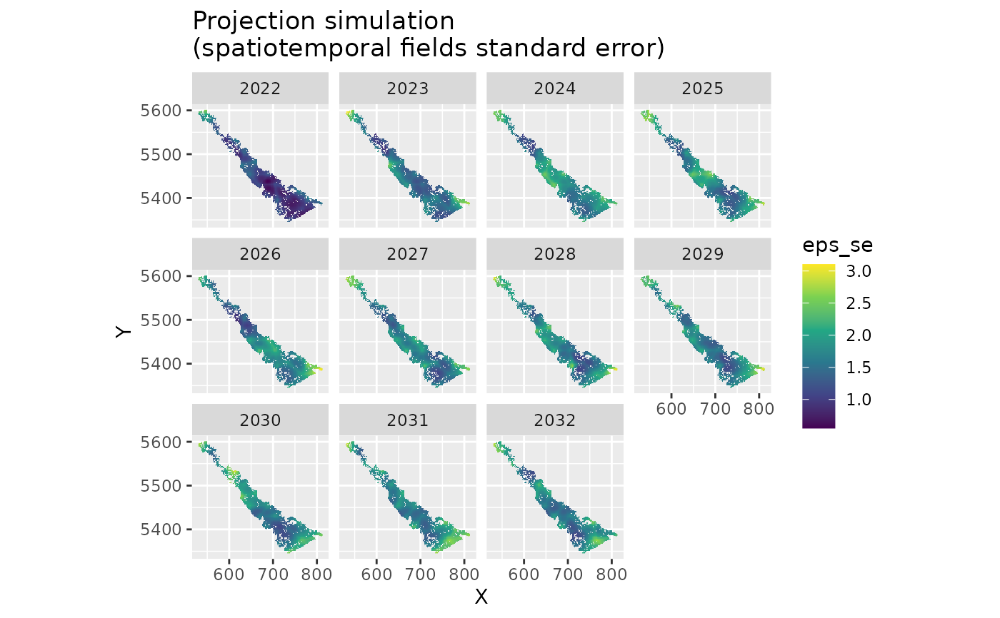

![[Experimental]](figures/lifecycle-experimental.svg)
The function enables projecting forward in time from an
sdmTMB model using a simulation approach for computational efficiency.
This can be helpful for calculating predictive intervals for long
projections where including those time elements in extra_time during model
estimation can be slow.
Inspiration for this approach comes from the VAST function
project_model().
Arguments
- object
A fitted model from
sdmTMB().- newdata
A new data frame to predict on. Should contain both historical and any new time elements to predict on.
- nsim
Number of simulations.
- uncertainty
How to sample uncertainty for the fitted parameters:
"both"for the joint fixed and random effect precision matrix,"random"for the random effect precision matrix (holding the fixed effects at their MLE), or"none"for neither.- silent
Silent?
- sims_var
Element to extract from the TMB report. Also see
return_tmb_report.- sim_re
A vector of
0s and1s representing which random effects to simulate in the projection. Generally, leave this untouched. Order is: spatial fields, spatiotemporal fields, spatially varying coefficient fields, random intercepts, time-varying coefficients, smoothers. The default is to simulate spatiotemporal fields and time-varying coefficients, if present.- return_tmb_report
Return the TMB report from
simulate()? This lets you parse out whatever elements you want from the simulation including grabbing multiple elements from one set of simulations. See examples.- ...
Passed to
predict.sdmTMB().
Value
Default: a list with elements est and epsilon_st (if spatiotemporal
effects are present). Each list element includes a matrix with rows
corresponding to rows in newdata and nsim columns. For delta models, the
components are est1, est2, epsilon_st, and epsilon_st2 for the 1st
and 2nd linear predictors. In all cases, these returned values are in link
space.
If return_tmb_report = TRUE, a list of TMB reports from simulate().
Run names() on the output to see the options.
Author
J.T. Thorson wrote the original version in the VAST package. S.C. Anderson wrote this version inspired by the VAST version with help from A.J. Allyn.
Examples
# \donttest{
library(ggplot2)
mesh <- make_mesh(dogfish, c("X", "Y"), cutoff = 25)
historical_years <- 2004:2022
to_project <- 10
future_years <- seq(max(historical_years) + 1, max(historical_years) + to_project)
all_years <- c(historical_years, future_years)
proj_grid <- replicate_df(wcvi_grid, "year", all_years)
# we could fit our model like this, but for long projections, this becomes slow:
if (FALSE) {
fit <- sdmTMB(
catch_weight ~ 1,
time = "year",
offset = log(dogfish$area_swept),
extra_time = all_years, #< note that all years here
spatial = "on",
spatiotemporal = "ar1",
data = dogfish,
mesh = mesh,
family = tweedie(link = "log")
)
}
# instead, we could fit our model like this and then take simulation draws
# from the projection time period:
fit2 <- sdmTMB(
catch_weight ~ 1,
time = "year",
offset = log(dogfish$area_swept),
extra_time = historical_years, #< does *not* include projection years
spatial = "on",
spatiotemporal = "ar1",
data = dogfish,
mesh = mesh,
family = tweedie(link = "log")
)
# we will only use 20 `nsim` so this example runs quickly
# you will likely want many more (> 200) in practice so the result
# is relatively stable
set.seed(1)
out <- project(fit2, newdata = proj_grid, nsim = 20)
#> Fitted object contains an offset but the offset is `NULL` in `predict.sdmTMB()`
#> and `newdata` were supplied.
#> Prediction will proceed assuming the offset vector is 0 in the prediction.
#> Specify an offset vector in `predict.sdmTMB()` to override this.
names(out)
#> [1] "est" "epsilon_st"
est_mean <- apply(out$est, 1, mean) # summarize however you'd like
est_se <- apply(out$est, 1, sd)
# visualize:
proj_grid$est_mean <- est_mean
ggplot(subset(proj_grid, year > 2021), aes(X, Y, fill = est_mean)) +
geom_raster() +
facet_wrap(~year) +
coord_fixed() +
scale_fill_viridis_c() +
ggtitle("Projection simulation (mean)")

# visualize the spatiotemporal random fields:
proj_grid$eps_mean <- apply(out$epsilon_st, 1, mean)
proj_grid$eps_se <- apply(out$epsilon_st, 1, sd)
ggplot(subset(proj_grid, year > 2021), aes(X, Y, fill = eps_mean)) +
geom_raster() +
facet_wrap(~year) +
scale_fill_gradient2() +
coord_fixed() +
ggtitle("Projection simulation\n(spatiotemporal fields)")

ggplot(subset(proj_grid, year > 2021), aes(X, Y, fill = eps_se)) +
geom_raster() +
facet_wrap(~year) +
scale_fill_viridis_c() +
coord_fixed() +
ggtitle("Projection simulation\n(spatiotemporal fields standard error)")

# }